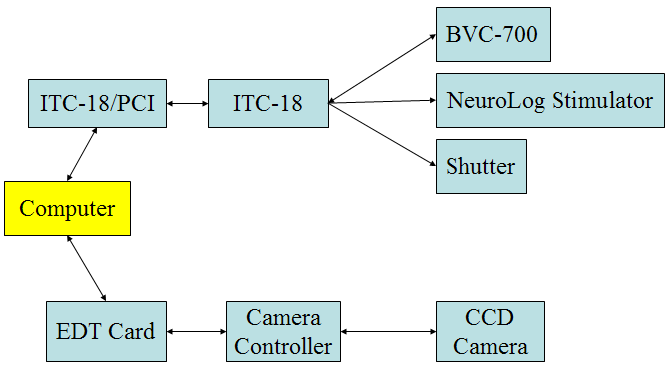
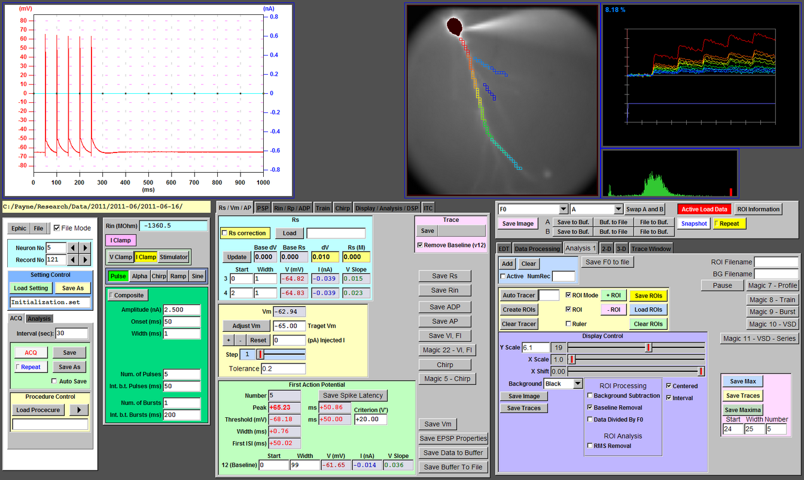

Ephic is developed by Dr. Payne Chang in Dr. Daniel Johnston's lab in the Center for Learning and Memory, the University of Texas at Austin.
The main purpose of Ephic is to simultaneously control a fast, low noise, and quantitative CCD camera (RedShirtImaging CCD-SMQ camera) through an EDT DV C-Link frame grabber board, and an amplifier through a HEKA ITC-18 data acquisition interface. The system is good for voltage imaging, calcium imaging, whole cell recording, and field potential recroding. Ephic is equipped with intuitive and versatile tools to control the experiment. It also contains several powerful tools to analyze both imaging and electrical data.
Required Devices:(These devices are required to acquire data, but not required to run Ephic for data analysis.)
Optional Devices:
Required Drivers:Development Environment: |
Setup Configuration |
|
ΔF/F of Five bAPs at 20 Hz (3D)
|
ΔF/F of Five bAPs at 100 Hz (3D)
|
